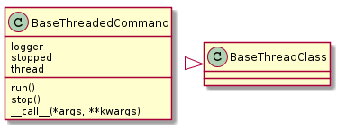
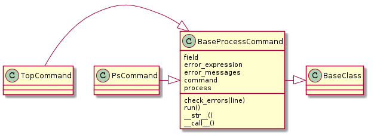

A base for certain (simple) commands.
This is an abstract base class for threaded commands. Children of it will raise an exception on instantiation if the run and stop methods are not defined. The main interface to it is the __call__ which will pass in any arguments given to the run_thread method (inherited from the BaseThreadClass).
| BaseThreadedCommand() | An abstract base-class for simple commands to run in a thread |

This is a base-class for commands that retrieve process-information.
| BaseProcessCommand([connection]) | A parent class for process-commands (e.g. |

- TopCommand
- PsCommand
- Sends the command over its connection
- Traverses the output
- Interprets errors
- Yields output
A base class to search for processes in the output of the BaseProcessCommand children.